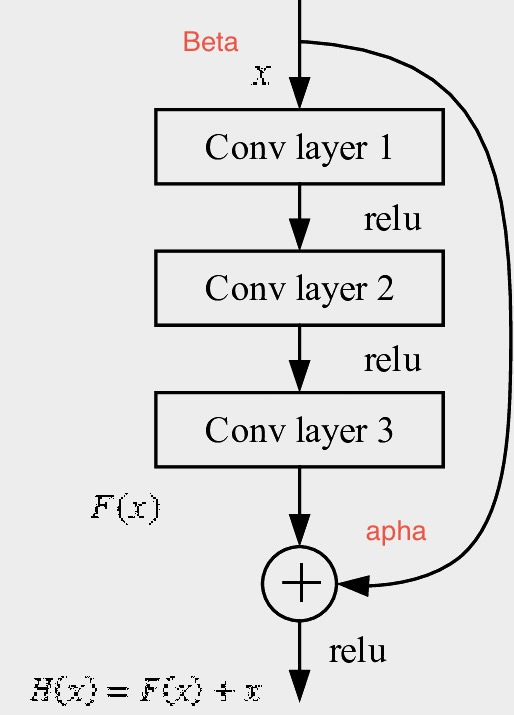
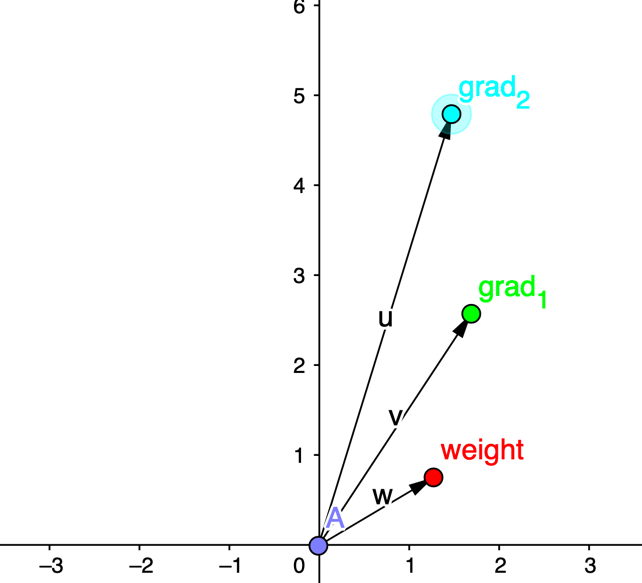
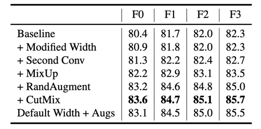
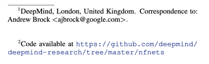
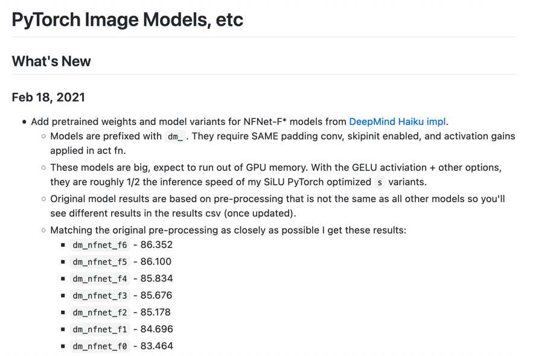
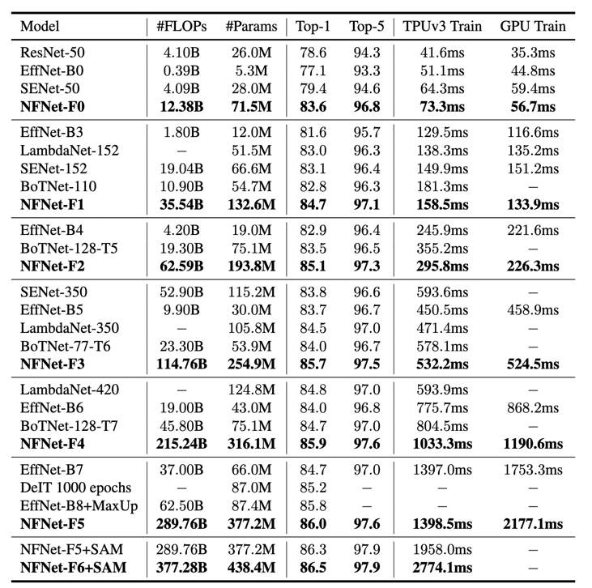
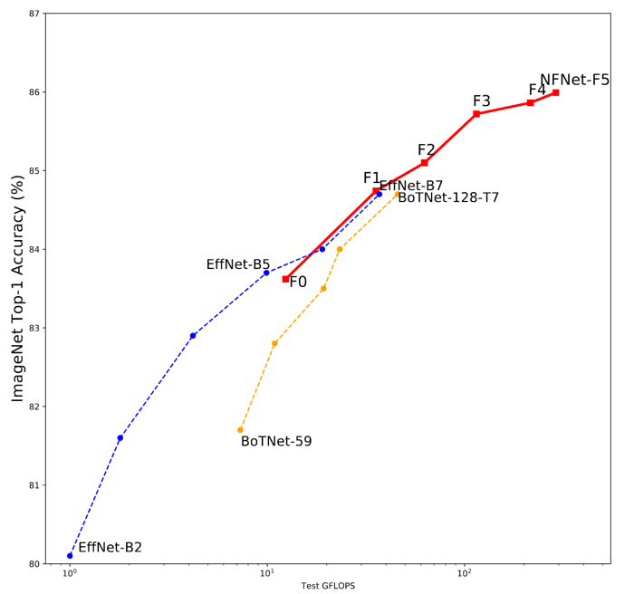

Assumptions
- You know how deep-learning (and back-prop) works
- You understand the concept of ResNets
- You know (basics of) PyTorch
- You heard about Batch Normalization
Agenda
- Introduction
- The problem with Batch Normalization
- How to eliminate Batch Normalization
- Gradient clipping - novel idea
- View from an ML Engineer perspective
- Discussion
Quick summary
Extension of:
Characterizing signal propagation to close the performance gap in unnormalized ResNets
Brock et al. 2021 ICLR 2021
Novel idea - replace Batch Normalization with Adaptive Gradient Clipping
$G_{i}^{\ell} \rightarrow\left\{\begin{array}{ll}\lambda
\frac{\left\|W_{i}^{\ell}\right\|_{F}^{\star}}{\left\|G_{i}^{\ell}\right\|_{F}} G_{i}^{\ell} & \text { if }
\frac{\left\|G_{i}^{\ell}\right\|_{F}}{\left\|W_{i}^{\ell}\right\|_{F}^{\star}}>\lambda, \\ G_{i}^{\ell} &
\text { otherwise. }\end{array}\right.$
New normalizer-free network architecture
I'm not into CV, why should I care?
Ideas propagate from one domain to another
What works for CV is likely to work for other fields
Batch Normalization (BN)
Quick recap
$ \mu_{\mathcal{B}} \leftarrow \frac{1}{m} \sum_{i=1}^{m} x_{i} (1)\\ $
$ \sigma_{\mathcal{B}}^{2} \leftarrow \frac{1}{m} \sum_{i=1}^{m}\left(x_{i}-\mu_{\mathcal{B}}\right)^{2}
(2)\\ $
$ \widehat{x}_{i} \leftarrow \frac{x_{i}-\mu_{\mathcal{B}}}{\sqrt{\sigma_{k}^{2}+\epsilon}} (3)\\ $
$ y_{i} \leftarrow \gamma \widehat{x}_{i}+\beta \equiv \mathrm{BN}_{\gamma, \beta}\left(x_{i}\right) (4)
$
Batch
Normalization: Accelerating Deep Network Training by Reducing Internal Covariate Shift
Ioffe and
Szegedy 2015
BN downscales the residual branch
After BN model is "biased" towards skip connection =>
deeper networks can be trained
BN allows efficient large-batch training
BN smoothens the loss so bigger batches can be used
The bigger the batch size the larger stable lr
Bigger batch size => less "update steps" required
If it is so useful, why is BN a problem?
BN breaks the independence between training examples in the mini-batch
$ \widehat{x}_{i} \leftarrow \frac{x_{i}-\mu_{\mathcal{B}}}{\sqrt{\sigma_{k}^{2}+\epsilon}} (3)\\ $
Variance shift correction
$h_{i+1}=h_{i}+\alpha f_{i}\left(h_{i} / \beta_{i}\right)$
$\operatorname{Var}\left(f_{i}(z)\right)=\operatorname{Var}(z)$
$h_{i}$: the inputs to the $i^{t h}$ residual block
$f_{i}$: the function computed by the $i^{t h}$ residual branch
$\alpha$: rate at which the variance increases after each residual
block
$\beta_{i}=\sqrt{\operatorname{Var}\left(h_{i}\right)},$
In inference mode, independent from other examples in a batch
Intuition
$h_{i+1}=h_{i}+\alpha f_{i}\left(h_{i} / \beta_{i}\right)$

Prevention of a mean shift
in the hidden activations
$$
\begin{array}{c}
\hat{W}_{i j}=\frac{W_{i j}-\mu_{i}}{\sqrt{N} \sigma_{i}} \\
\end{array}
\\
\\
\mu_{i}=(1 / N) \sum_{j} W_{i j}\\ \sigma_{i}^{2}=(1 / N) \sum_{j}\left(W_{i
j}-\mu_{i}\right)^{2}
$$
and $N$ denotes the fan-in (number of inputs to the hidden unit)
Adaptive Gradient Clipping
$G \rightarrow\left\{\begin{array}{ll}\lambda \frac{G}{\|G\|} & \text { if }\|G\|>\lambda \\ G & \text {
otherwise }\end{array}\right.$
On the difficulty of training Recurrent Neural Networks
Pascanu et al. 2013
$G_{i}^{\ell} \rightarrow\left\{\begin{array}{ll}\lambda
\frac{\left\|W_{i}^{\ell}\right\|_{F}^{\star}}{\left\|G_{i}^{\ell}\right\|_{F}} G_{i}^{\ell} & \text { if }
\frac{\left\|G_{i}^{\ell}\right\|_{F}}{\left\|W_{i}^{\ell}\right\|_{F}^{\star}}>\lambda, \\ G_{i}^{\ell} &
\text { otherwise. }\end{array}\right.$
High-Performance Large-Scale Image
Recognition Without Normalization
Brock et al. 2021
Clip only too big gradients

grad_2 compared to weight is larger then $\lambda$
$G_{i}^{\ell} \rightarrow\left\{\begin{array}{ll}\lambda
\frac{\left\|W_{i}^{\ell}\right\|_{F}^{\star}}{\left\|G_{i}^{\ell}\right\|_{F}} G_{i}^{\ell} & \text { if }
\frac{\left\|G_{i}^{\ell}\right\|_{F}}{\left\|W_{i}^{\ell}\right\|_{F}^{\star}}>\lambda, \\ G_{i}^{\ell} &
\text { otherwise. }\end{array}\right.$
Adaptive Gradient Clipping in code
$G_{i}^{\ell} \rightarrow\left\{\begin{array}{ll}\lambda
\frac{\left\|W_{i}^{\ell}\right\|_{F}^{\star}}{\left\|G_{i}^{\ell}\right\|_{F}} G_{i}^{\ell} & \text { if }
\frac{\left\|G_{i}^{\ell}\right\|_{F}}{\left\|W_{i}^{\ell}\right\|_{F}^{\star}*\lambda}>1, \\ G_{i}^{\ell} &
\text { otherwise. }\end{array}\right.$
def adaptive_clip_grad(parameters, clip_factor=0.01, eps=1e-3, norm_type=2.0):
for p in parameters:
p_data = p.detach()
g_data = p.grad.detach()
max_norm = unitwise_norm(p_data, norm_type=norm_type).clamp_(min=eps).mul_(clip_factor)
grad_norm = unitwise_norm(g_data, norm_type=norm_type)
clipped_grad = g_data * (max_norm / grad_norm.clamp(min=1e-6))
new_grads = torch.where(grad_norm < max_norm, g_data, clipped_grad)
p.grad.detach().copy_(new_grads)
Implementation
in timm
How is Adaptive Gradient Clipping useful?
Gradient clipping prevents optimizer from too big jumps
Adaptive makes additional usege of gradient to parameter proportion
Less dependent on hyper-parameter $\lambda$?
Training is more smooth (no jumps due to a noise in data)
Last, but not least
Proposed architecture
Start with: SE-ResNeXt-D
Add few tweaks
Overpriced TPU go brr
New SOTA on ImageNet

Do they provide code?
Yes, there is an official implementationin
t̶e̶n̶s̶o̶r̶f̶l̶o̶w̶ jax

For those, who have self-respect, there is an unofficial PyTorch implementation

How to use it?
import timm
from utils import example_batch_of_images
model = timm.create_model('dm_nfnet_f0', pretrained=True)
model.eval()
prediction = model(example_batch_of_images)
prediction.size()
>>> torch.Size(128, 1000)
How to train it?
Exactly same approach as with Resnet/Efficientnet/Whatevernet
class NFNetBasedfCustomClassifier(pl.LightningModule):
def __init__(self):
super().__init__()
self.criterion = nn.CrossEntropyLoss()
self.model = timm.create_model('dm_nfnet_f0', pretrained=True)
def forward(self, x):
return self.model(x)
def training_step(self, batch, batch_idx):
x, y = batch
logits = self.forward(x)
loss = self.criterion(logits, y)
return loss
def configure_optimizers(self):
optimizer = torch.optim.Adam(self.parameters(), lr=1e-3)
scheduler = lr_scheduler.StepLR(optimizer, step_size=7, gamma=0.1)
return [optimizer], [scheduler]
Number of parameters increased

Despite far larger number of parameters, comparable times of a single full
training step
Number of FLOPS increased

Better results, more FLOPs, but similar times (is that comparison fair?)
Discussion
Even though we can benefit from new models
It is far more useful for those with big resources
Speculations
If BN is not a limiting factor more parameters can be added making
future models even less useful for
"non-google" labs
Predictions
10.III.2021
- Google/Deepmind will do "EfficientNet-like" grid search for optimal architecture
- The NF Net (or its efficient descendant) will be used as a backbone of a new SOTA object detection
model
- The idea of Adaptive Gradient Clipping will be successfully applied in transformer models,
especially for CV (as they require far more resources)
TL;DR
- NF Net = New ImageNet SOTA
- Batch Normalization = slow operations
- No BN layer = faster forward/backward pass
- BN replaced with scaling and Adaptive Gradient Clipping
- (Probably) A new paradigm for
designing architectures